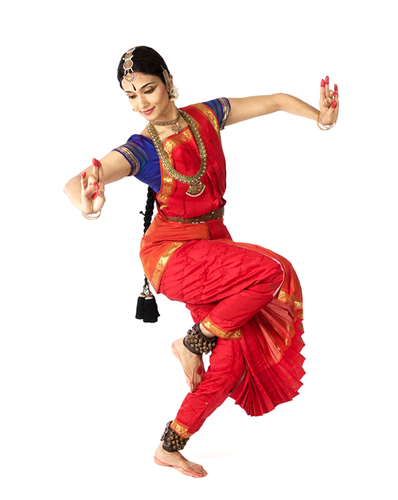
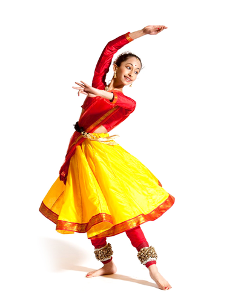
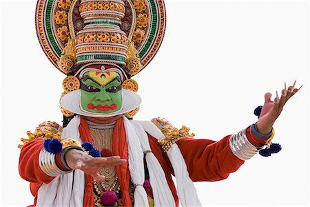
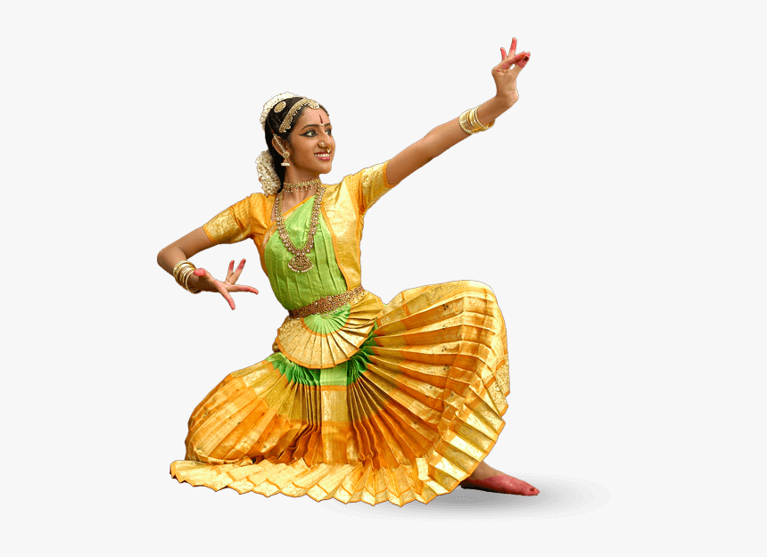
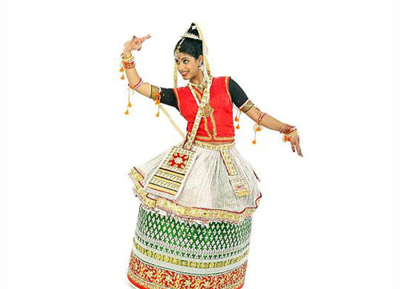
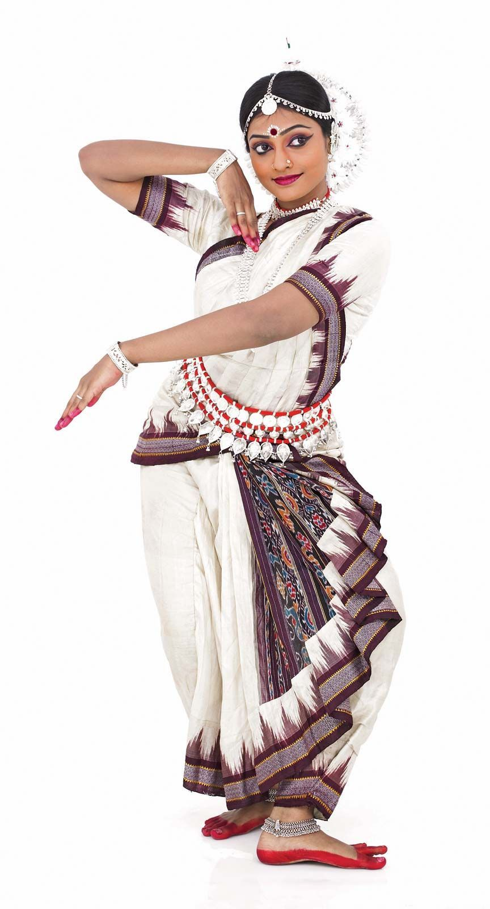
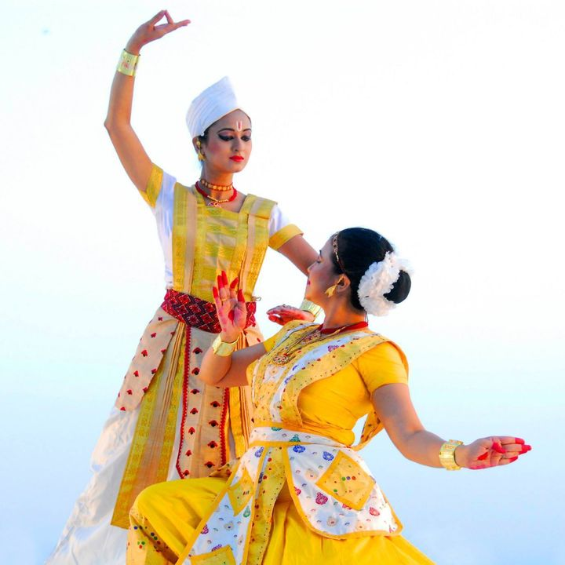
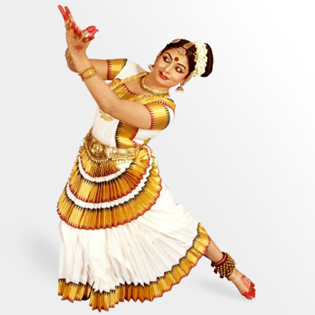

- Bharatanatyam – Tamil Nadu.
- Kathak – Uttar Pradesh.
- Kathakali – Kerala.
- Kuchipudi – Andhra Pradesh.
- Manipuri – Manipur.
- Odissi – Orissa.
- Sattriya – Assam.
- Mohiniyattam – Kerala.
1.Bharatanatyam:
Bharatanatyam, the oldest form of the classical dance in the country and one of the Most Popular Classical Dance in India and ancient in the Natya Shastra. Bharatanatyam is considered to the oldest form of dance and mother of all other style of classical dance in India. The classical Indian dance Bharatanatyam is originated from the art of temple dancers in the South India state of Tamil Nadu. Bharatanatyam is reworked form of dance from the traditional sadir and combination of expression,music,beat and dance. Bharatanatyam or the fire dance is one of the most popular styles of dance performed by dancers.
2.Kathak:
Kathak is originated from Uttar Pradesh and one of the eight forms of ancient classical dances of India. Famous Kathak dance is derived from Katha or story-tellers,people who narrate stories during the whole art of Kathak dance. Kathak is found in three distinct forms, called "gharanas", named after the cities where the Kathak dance tradition evolved – Jaipur, Banaras and Lucknow. ... Stylistically, the Kathak dance form emphasizes rhythmic foot movements, adorned with small bells (Ghungroo), and the movement harmonized to the music.
3.Kathakali:
Kathakali is one of the most attracting classical Indian dance-drama performed by well trained artist. Kathakali is originated in God’s own country Kerala in 17th century and got popular at every corner of India. The attractive make-up,detailed gestures and elaborate costumes of the characters along with body movements with playback music are best experience to watch.
4.Kuchipudi:
The Classical Indian dance form originated Andhra Pradesh state and got its name from Kuchipudi village near the Bay of Bengal. Kuchipudi is the most popular traditional dance form in South India performed with violin, flute and the tambura instruments and the characters first introduces them self by the dharavu.Kuchipudi is a dance-drama performance, with its roots in the ancient Hindu Sanskrit text of Natya Shastra. It developed as a religious art linked to traveling bards, temples and spiritual beliefs, like all major classical dances of India.
5.Manipuri:
Manipuri dance form is one of the major classical dance forms of India,originates from the north-eastern state Manipur. Manipuri themes is based to the Raslila act of Radha and Krishna and is purely religious along with spiritual experience.Manipuri dance, also known as Jagoi, is one of the major Indian classical dance forms, named after the region of its origin – Manipur.
6.Odissi:
Odissi is the oldest surviving dance form in India,originates from state of Orissa. The Odissi dance form is known for its style, the independent movement of head, chest and pelvis. Beautiful Odissi Dance is traditional and ancient style of dance performed in the temples. Odissi is traditionally a dance-drama genre of performance art, where the artist(s) and musicians play out a mythical story, a spiritual message or devotional poem from the Hindu texts, using symbolic costumes, body movement, abhinaya (expressions) and mudras (gestures and sign language) set out in ancient Sanskrit literature. Classical Odia literature & the Gitagovinda set to traditional Odissi music are used for the abhinaya. Odissi is learnt and performed as a composite of basic dance motif called the Bhangas.
7.Sattriya:
The Sattriya Dance of Assam is living tradition of state and one of the eight major classical Indian dance traditions. Sattriya classical dance form is well appreciated outside the state as well as outside of Indian mainland.Sattriya or Sattriya Nritya, is a major Indian classical dance. It is a dance-drama performance art with origins in the Krishna-centered Vaishnavism monasteries of Assam, and attributed to the 15th century Bhakti movement scholar and saint Mahapurush Srimanta Sankardev.The Sattriya dancers opt for these Silk sarees when putting together their dance attire.
8.Mohiniyattam:
Mohiniyattam is another classical dance style from Kerala state and one of the eight principal Indian classical dance. The Mohiniyattam is a popular dance form with a drama in dance,performed with subtle gestures and footwork. More specifically, it is a dance that excels in Ekaharya Abhinaya form, that is a solo expressive dance performance aided by singing and music.
